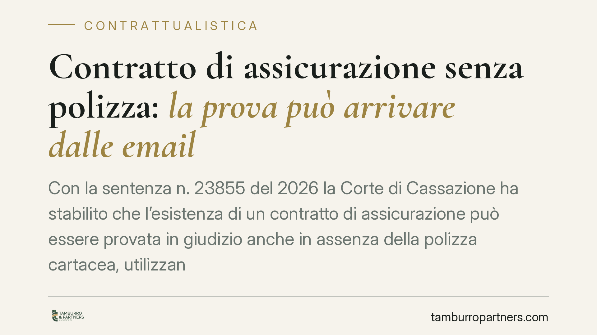

Contratto di assicurazione senza polizza: la prova può arrivare dalle email
Con la sentenza n. 23855 del 2026 la Corte di Cassazione ha stabilito che l'esistenza di un contratto di assicurazione può essere provata in giudizio anche in assenza della polizza cartacea, utilizzando lo scambio di email e altre comunicazioni elettroniche. Una lettura che incide sul modo in cui imprese e compagnie documentano e gestiscono i rapporti assicurativi.

Il caso
Un'azienda cliente e una compagnia assicurativa controvertevano sull'esistenza di un contratto di assicurazione. Mancava la polizza sottoscritta in forma cartacea, ma tra le parti erano intercorse email e comunicazioni elettroniche che documentavano l'accordo sulle condizioni essenziali: rischio coperto, premio e durata.
La Corte di Cassazione, Sez. Civile, con la sentenza n. 23855 del 2026, ha confermato che il rapporto poteva ritenersi provato sulla base di quello scambio documentale, senza necessità della polizza tradizionale.
Inquadramento normativo
L'art. 1888 del Codice civile dispone che il contratto di assicurazione "deve essere provato per iscritto". Attenzione al punto: si tratta di un requisito di *prova* (ad probationem), non di *validità* (ad substantiam). Il contratto è dunque valido anche senza forma scritta; la forma scritta serve soltanto a dimostrarne l'esistenza in caso di contestazione.
La distinzione è decisiva. Quando la forma è richiesta ad substantiam, senza il documento il contratto non esiste. Quando è richiesta ad probationem, il contratto esiste comunque: la scrittura serve solo a provarlo davanti al giudice.
Da qui il passaggio compiuto dalla Cassazione. La "prova per iscritto" non coincide con un unico documento formale firmato dalle parti. Ai sensi del Codice dell'amministrazione digitale (D.Lgs. n. 82/2005) e dell'art. 2712 c.c. sulle riproduzioni informatiche, anche le email e le comunicazioni elettroniche possono integrare la prova scritta del rapporto, purché ne emergano con chiarezza gli elementi essenziali e la provenienza dalle parti.
Implicazioni pratiche
Per le imprese che stipulano coperture assicurative, la pronuncia ha un doppio effetto.
Da un lato, amplia le possibilità di tutela: se la polizza cartacea manca o è andata dispersa, il rapporto può essere dimostrato ricostruendo la corrispondenza elettronica intercorsa con la compagnia. Non si resta privi di prova per il solo fatto che non esista un documento firmato in originale.
Dall'altro, aumenta la responsabilità nella gestione documentale. Se una email può provare l'esistenza e il contenuto della copertura, allora ogni scambio va trattato con attenzione: una comunicazione imprecisa sulle condizioni, o l'assenza di un riscontro chiaro, può tradursi in incertezze sull'oggetto e sui limiti della garanzia.
Lo stesso vale, in senso speculare, per le compagnie: la corrispondenza commerciale può essere invocata dal cliente per affermare l'esistenza di un vincolo che l'assicuratore riteneva non ancora perfezionato.
Cosa fare in concreto
- Conservate la corrispondenza elettronica relativa a ogni copertura assicurativa, dalla richiesta di preventivo alla conferma finale, con criteri ordinati e ricercabili.
- Verificate che le email definiscano gli elementi essenziali: rischio assicurato, importo del premio, decorrenza e durata. La genericità indebolisce il valore probatorio.
- Chiedete sempre un riscontro scritto alla compagnia sull'avvenuta accettazione, evitando situazioni in cui la copertura sia data per acquisita senza conferma.
- Distinguete le fasi della trattativa dall'accordo concluso: chiarite nelle comunicazioni quando state ancora negoziando e quando invece intendete vincolarvi.
- In caso di contestazione, mappate per tempo la documentazione disponibile — inclusi metadati e log di invio — prima di assumere posizioni in sede stragiudiziale o giudiziale.
Una nota di prudenza
La pronuncia non elimina il valore della polizza formale, che resta lo strumento più solido e immediato di prova. Indica piuttosto che, in sua assenza, il giudice può valorizzare altri elementi. Non ogni email equivale a un contratto: la valutazione resta ancorata al caso concreto, alla chiarezza del contenuto e alla riconducibilità alle parti.
Consigliamo perciò di non affidarsi alla prova elettronica come soluzione ordinaria, ma di curare comunque la formalizzazione dei rapporti, riservando alla corrispondenza il ruolo di supporto e integrazione.
Disclaimer
Contributo informativo a cura di Tamburro & Partners - Avv. Giuseppe Tamburro. Non costituisce parere legale.
Ogni contratto ha il suo equilibrio.
Se vuoi una revisione delle clausole o una redazione su misura, scrivi allo studio. Ti rispondiamo entro un giorno lavorativo.